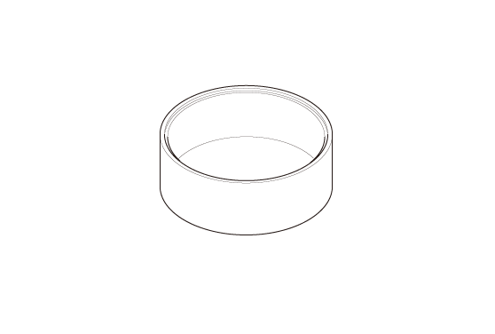

LEMON Manuals
: Even more car manuals for everyone: 1960-2025
Home
>>
Honda
>>
2016
>>
Civic LX, 4D Sedan, Automatic CVT Trans
>>
Repair and Diagnosis
>>
Brakes
>>
Mechanical - Hydraulic
>>
Brake System - Service Information
>>
Overhaul
>>
Rear Brake Caliper Overhaul
>>
Notes
Rear Brake Caliper Overhaul: Notes
Special Tools Required
Image
Description/Tool Number

Courtesy of HONDA, U.S.A., INC.
Installer, Rear Brake Caliper Dust Boot 070AD-TV00100